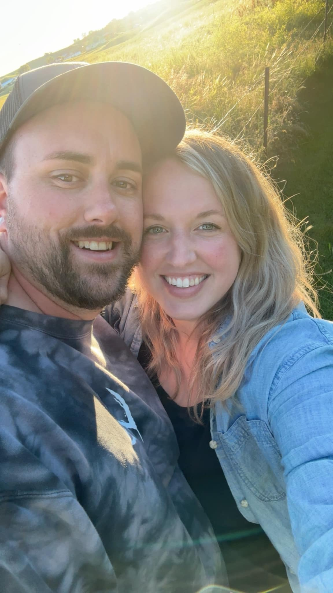
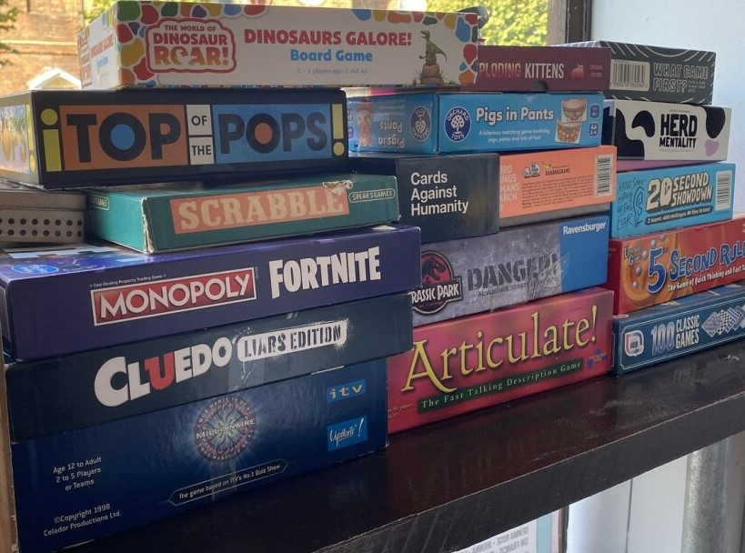

So you want to know more about me?!
My name is Bruce and I started Fall 2024 at STC for Computer Programming. On top of full-time school I currently work full-time for Midco in Sioux Falls. I obtainted a Bachelor's Degree in Digital Arts & Design with a specializaion in Audio Production from Dakota State University in 2013. I have since been living in Sioux Falls and working in the AV and telecommunication industries. I have an extremely rambunctious 5 year old whom I would move mountains for. I also have an extremely lazy and cuddly cat named Bilbo. I hope to continue to learn and grow with each day and hopefully improve the lives of myself and others through coding.

Hobbies
I spend I large amount of my time outside of work and school going on adventures with my son and girlfriend. I also enjoy playing video games, board games, and hanging out with friends. I've included a couple of my biggest non-digital hobbies below.
Dungeons & Dragons (often abbreviated as D&D) is a cooperative, role-playing game where you and your friends create unique characters and embark on thrilling adventures. At its core, D&D is a collaborative storytelling experience. Players create characters by choosing from various races, classes, and backgrounds, before venturing into a fantasy world where the story unfolds.

Warhammer 40,000 (often abbreviated as 40K) is a captivating tabletop wargame that combines strategy, creativity, and a dash of luck. It is a blend of miniature modeling, storytelling, and intense battles—a universe where heroes, villains, and cosmic horrors clash across the stars.

I'm almost always down for a large variety of board games. I typically will stick to strategic games such as Root of BarBearians but I will play anything that gets me at a table with friends. It's a joy to work with or against my friends while unwinding from our day/week.
